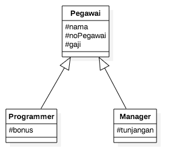
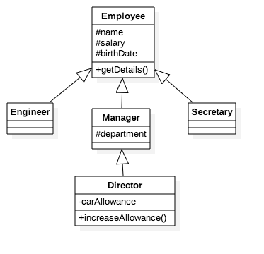

Pemrograman Berorientasi Obyek
Dian Hanifudin Subhi
Inheritance

Q: What's the object-oriented way to become wealthy?
A: Inheritance
Topik Bahasan
- Pengertian Inheritance
- Access Control
- Deklarasi Inheritance
- Single Inheritance
- Multilevel Inheritance
- Super Keyword
Pengertian
- Inheritance (Pewarisan) merupakan salah satu dari konsep dasar OOP.
- Konsep Inheritance ini mengadopsi dunia nyata dimana suatu
entitas/obyek dapat mempunyai entitas/obyek turunan.
- Dengan konsep inheritance, sebuah class dapat mempunyai class turunan.
Pengertian
- Suatu class yang mempunyai class turunan dinamakan parent class
atau base class atau super class.
- Sedangkan class turunan itu sendiri seringkali disebut subclass
atau child class.
- Suatu subclass dapat mewarisi apa-apa yang dipunyai oleh parent
class.
Pengertian
- Subclass dapat mewarisi apa-apa yang dipunyai oleh parent class, maka
member dari suatu subclass terdiri dari apa-apa yang dipunyai dan juga
yang diwarisi dari class parent.
- Kesimpulannya, boleh dikatakan bahwa suatu subclass adalah tidak lain
hanya memperluas (extends) parent class.
Contoh Inheritance

- Super Class: Pegawai
- Subclass: Programmer dan Manager
Istilah Lain Inheritance
- Generalisasi: super class memiliki bentuk atau sifat yang lebih
umum daripada subclass.
- Relasi Is A: Subclass is a Super Class. Contoh:
Programmer is a Pegawai (Programmer adalah Pegawai).
Modifier Access
| Modifier |
Class |
Package |
Subclass |
Other Class |
| private |
✓ |
|
|
|
| default |
✓ |
✓ |
|
|
| protected |
✓ |
✓ |
✓ |
|
| public |
✓ |
✓ |
✓ |
✓ |
Deklarasi
- Menambahkan kata kunci extends setelah deklarasi nama class,
diikuti dengan nama parent (super) class.
- Kata kunci extends tersebut memberitahu kompiler Java bahwa
kita ingin melakukan perluasan class.
Contoh Deklarasi Inheritance
public class SubClass extends ParentClass {
...
}
Class Object
Kode Java
public class A {
...
}
Hasil Kompilasi
public class A extends Object {
...
}
Semua class di dalam Java, merupakan subclass dari super class
Object
Kapan Inheritance Dibutuhkan
- Pada saat dijumpai suatu class yang dapat diperluas dari class lain.
- Terdapat beberapa class yang memiliki sifat (atribut dan method) yang
sama. Atribut dan method yang sama, dienkapsulasi pada super class.
public class Pegawai {
private String nama;
private double gaji;
}
public class Manajer {
private String nama;
private double gaji;
private String departemen;
}
public class Programmer {
private String nama;
private double gaji;
private double bonus;
}
- Class Manajer mempunyai data member yang identik sama dengan class
Pegawai, hanya saja ada tambahan data atribut departemen
- Class Manajer merupakan perluasan dari class Pegawai dengan tambahan
data atribut departemen.
- Konsep inheritance dapat diterapkan pada kasus seperti ini.
public class Pegawai {
protected String nama;
protected double gaji;
}
public class Manajer extends Pegawai {
private String departemen;
}
public class Programmer extends Pegawai {
private double bonus;
}
Single Inheritance
- Konsep inheritance yang ada di Java, hanya memperkenankan single
inheritance.
- Single Inheritance hanya memperbolehkan suatu subclass mempunyai satu
parent class.
Multilevel Inheritance
- Konsep inheritance yang ada di Java memperkenankan adanya Multilevel
Inheritance.
- Konsep Multilevel Inheritance memperbolehkan suatu subclass mempunyai
subclass lagi.
Multilevel Inheritance

Inheritance pada Constructor
- Constructor dari parent class tidak dapat diwariskan ke subsclass.
- Sehingga dibutuhkan pemanggilan constructor parent class dalam
constructor subclass.
- Pemanggilan constructor parent harus dilakukan pada baris pertama dari
constructor subclass.
Kata Kunci Super
- Kata kunci super digunakan untuk merujuk pada member dari
parent class.
- Sebagaimana kata kunci this yang dipakai untuk merujuk pada
member dari class itu sendiri
- Format penulisan:
- super.namaAtribut : merujuk atribut dari parent class
- super.namaMethod() : merujuk pada method dari parent class.
- super() : merujuk constructor parent class.